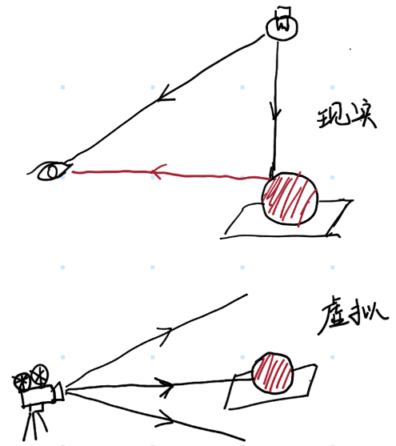

这一部分内容我按照教程 Ray Tracing in One Weekend 来实现的，详细内容可以参照这个教程。
我个人完成的实现代码在这里。
说到这个项目，也算得上是机缘巧合。都感觉 Python 写多了容易降低自己的编程水平，于是乎想着要学点能够战未来的编程语言。感觉 Rust 挺不错的，于是乎开坑学习，想找些比较复杂的练手项目，便看到了这个。或许是游戏打的比较多，之前也对图形学抱着一些兴趣，但没找到比较好的接触机会，便想借着这个机会学习一下。
# 首先，光线追踪是什么？
现在我们的手头有一堆 3D 模型摆在摄像机前面 —— 反正先不管它们是哪里来的。我们想要用计算机计算出摄像机拍到的画面，这个过程也就是所谓的渲染。说白了也就是用计算机去模拟我们看到的东西。
在现实世界中，我们所看到的东西都是这样子的：光源 —— 不管是太阳还是灯泡，发射出了无数条带有箭头的射线，狠狠地打在路径中的物体上，然后被物体散射的到处都是，其中一部分飞进了你的眼睛里，然后你就看到了东西。总而言之，光源发射光线，物体反射光线，其中一部分进入眼睛，然后我们就看到了东西。
暂且不谈十分物理的东西，毕竟我们多半也用不上。从计算机实现的角度来说，这个是比较难以直接实现的 —— 一方面，我们只能够计算离散的东西，而从传统的意义上来说，光线传播路径还有物体都算是连续的（我们不久就会碰到这个问题），更要命的地方在于，光源发出的这种 “带有箭头的射线” 非常多，计算每一条光线的路径远远超过了我们计算机能够承受的范围。所以，我们需要一些技巧来解决这个问题。
光栅化应该依旧算是目前多数游戏所使用的解决方案 —— 这个算法回避了光线追踪的巨大运算量问题，当然代价是更加复杂的数学原理和牺牲了的画面效果。
其实回过头看计算机图形学的发展史，或者说只要顺手打开 steam 上面随便哪一个 3D 的游戏就行，渲染这件事情早已经有了非常完善的解决方案。
# 那么，从画面开始入手
我们需要程序能够输出一张图片 —— 那我们肯定需要知道图片的长度和宽度（说到这个我就想起来长✖宽和宽✖高这绕人的东西）。
想象这样一个画面，一个摄影机正在拍摄一个场景 —— 摄像机的前面放着一张虚拟的幕布，摄像机所见的一切都投影在了这张幕布上。
当然这里有些混淆了世界窗口和视口（viewport）的概念，不过这里还是现就这样子了。我们要做的也就是把一个 3D 场景投影到这个虚拟的幕布（视口）上，然后把幕布上的内容输出成一张图片。和输出的图片一样，我们的这张虚拟幕布上排列着一些像素点，主要计算出来这些像素点的取值，我们就能够得到渲染的图片。
在视口上，像素点的数量和需要输出的图片尺寸是保持一致的，但是很明显我们需要去计算视口的尺寸以及其中像素点的距离。
此外，摄像机肯定也需要各种朝向，不可能固定在一个地方不动，所以说我们也需要知道摄像机的状态。
# 描述摄像机的状态
显然，我们仅仅依靠一个坐标是不能描述摄像机的状态的 —— 摄像机会在这个固定的位置上旋转，而且是异常灵活的旋转。我们至少需要确定摄像机的朝向和上方向，才能够固定摄像机的状态。
上面的图片显示了确定摄像机位置和朝向的参数设置，、 和 我们至少需要知道两个，剩下的一个可以通过向量叉乘来确定。我们定义一个 Vec3 类型来表示三维空间中的向量和点，这个类型的定义如下：
pub struct Vec3 { | |
pub x: f64, | |
pub y: f64, | |
pub z: f64, | |
} |
在初始化摄像机时，我们提供这样的参数用来决定摄像机的位置：
impl Camera { | |
pub fn new(..., view_position: (Vec3, Vec3, Vec3), ...) -> Self { | |
... | |
let (lookfrom, lookat, vup) = (view_position.0, view_position.1, view_position.2); | |
... | |
} | |
} |
其中 lookfrom 为相机位置， lookat 为相机面向的点坐标， vup 是相机的上方向。这里的 vup 不一定要和矢量 lookfrom-lookat 正交 —— 为了便于描述，我们采用另外的一组矢量来描述相机状态。
矢量为描述相机朝向的矢量，那么相机的右方向矢量可以通过和 Vup 的叉乘得到，决定了相机的上方向矢量可以通过和的叉乘得到，这部分的实现如下：
impl Camera { | |
pub fn new(..., view_position: (Vec3, Vec3, Vec3), ...) -> Self { | |
... | |
let (lookfrom, lookat, vup) = (view_position.0, view_position.1, view_position.2); | |
... | |
let center = lookfrom; | |
let w = (lookfrom - lookat).unit(); // 单位化的相机朝向矢量 | |
let u = vup.cross(w).unit(); // 单位化的相机右方向矢量 | |
let v = w.cross(u); // 相机上方向矢量，因为是两个正交的矢量叉积，所以已经是单位化的了 | |
} | |
} |
# 从视角决定视口
影响图像的另外一个重要因素是视场角（field of view），这个角度决定了摄像机能够看到的范围。
我们采用一个视场角，用于表述摄像机所能看到的垂直视野范围。这样，我们可以计算得到视口的高度和宽度。
impl Camera { | |
pub fn new( | |
image_size: (u32, u32), | |
..., | |
vfov: f64, | |
view_position: (Vec3, Vec3, Vec3), | |
defocus: (f64, f64), | |
) -> Self { | |
let (width, height) = image_size; | |
let (lookfrom, lookat, vup) = view_position; | |
// 这两个参数以后会提及 | |
let (defocus_angle, focus_dist) = defocus; | |
// 计算图像的宽高比 | |
let aspect_ratio = width as f64 / height as f64; | |
// 计算摄像机位置和朝向 | |
calculate_camera_position_and_direction(...); | |
// 利用视场角决定视口的高度和宽度 | |
let h = (theta / 2.0).tan(); | |
let viewport_height = 2.0 * h * focus_dist; | |
let viewport_width = aspect_ratio * viewport_height; | |
... | |
} | |
} |
在知道了视口的长度和宽度之后，我们需要知道视口中像素应该如何排列。我们一般处理的图像都是这样子的，从左上角开始作为原点，向右为 轴正方向，向下为 轴正方向。这样子，我们可以在代码中进行实现：
impl Camera { | |
pub fn new(...) -> Self { | |
... | |
// 计算视口的宽度（矢量形式） | |
let viewport_u = u * viewport_width; | |
// 计算视口的高度（矢量形式），注意这里的方向是相反的（因为图片上 y 轴向下） | |
let viewport_v = v * -viewport_height; | |
// 计算视口中的像素间隔（这里也是矢量的形式） | |
let pixel_delta_u = viewport_u / width as f64; | |
let pixel_delta_v = viewport_v / height as f64; | |
// 计算视口的左上角坐标 | |
let viewport_upper_left = | |
center - w * focus_dist - viewport_u / 2.0 - viewport_v / 2.0; | |
// 计算原点对应的像素坐标 | |
let pixel00_loc = viewport_upper_left + pixel_delta_u / 2.0 + pixel_delta_v / 2.0; | |
... | |
} | |
} |
最后两个式子可能稍微有些抽象，这里在图中进行一个简单的标注：
另一个前面没有解释清楚的问题是，为什么原点对应的像素 pixel00_loc 需要加上 1/2 的像素间隔？我们的视口可以被分成若干个网格，每个像素位于网格的正中心而不是顶点上，因此我们需要加上 1/2 的像素间隔把原点移动到像素中心。
# 光线的计算和模拟
还是需要重新解释一下光线追踪到底做了什么，从在现实中，我们所看见的东西来自于光线经过了物体的折射、反射之后进入了我们的眼睛。而在模拟过程中，直接去模拟整个场景中的光线传播显然是不现实的 —— 一方面，需要模拟的数据量是非常可怕的，另一方面，整个环境中大部分的光线都是没有进入摄像机的。

因为光路是可逆的 —— 我们可以反过来计算光线的传播路径，这样子我们只需要关心进入摄像机的这部分光线。这样子我们不难进一步想到，对于视口上的每一个像素，我们只需要确定经过这个像素的光线的颜色就行。
那么，问题就变成了，摄像机向视口上某个像素发射一条光线，去计算这个光线经过传播之后的颜色，从而决定这个像素的取值。
# 光线的表述
初中物理对光线就有一个非常直接的表述 —— 用一条带有箭头的直线表示光的传播路径和方向，这个直线也就是光线。不过显然，我们还是需要关心光线的起始位置的，毕竟我们不能透过后脑勺看见背后的东西 —— 再说了，在空间上描述一条直线本来也就需要一个坐标和一个方向向量。
我们可以很简单的用一个结构体来描述光线：
pub struct Ray { | |
pub origin: Vec3, | |
pub direction: Vec3 | |
} |
利用原点和方向向量，不难计算得出光线上的任意一点的坐标：
impl Ray { | |
pub fn at(&self, t: f64) -> Vec3 { | |
self.origin + self.direction * t | |
} | |
} |
# 模拟光线的传播
下面的问题就在于怎么样去模拟。对于视口中的每个像素，我们从摄像机位置向其发射一条光线，计算这条光线经过传播之后的颜色，然后把这个颜色作为这个像素的取值。
pub fn render(world: &HittableList, config: &CameraConfig) -> Vec<Vec<[u8; 3]>> { | |
let mut image = vec![ | |
vec![ | |
[0u8; 3]; | |
config.image_size.0 as usize | |
]; | |
config.image_size.1 as usize | |
]; | |
for row in 0..config.image_size.1 { | |
for col in 0..config.image_size.0 { | |
let pixel_color = render_pixel(row, col, world, config); | |
image[row as usize][col as usize] = pixel_color; | |
} | |
} | |
image | |
} |
这部分的工作就是遍历每一个像素，去计算这个像素的颜色。 world 存放了场景中的一系列实体，这在后面的章节中会进行叙述。
实际的复杂工作还是 render_pixel 函数完成的，这里做了什么？
fn render_pixel(col: u32, row: u32, world: &HittableList, config: &CameraConfig) -> [u8; 3] { | |
let mut pixel_color = Vec3::new(0.0, 0.0, 0.0); | |
// 获取穿过这个点的光线 | |
let ray = get_ray(col, row, config); | |
// 计算光线的颜色 | |
pixel_color = ray_color(&ray, config.max_depth, world); | |
// 将 pixel_color 转换为 u8 类型的 RGB 数组 | |
rgb_pixel = convert_color(pixel_color); | |
rgb_pixel | |
} |
对于每一个像素的渲染，实际上的工作就是去获取一条对应的光线，然后计算这条光线的颜色。获取光线的工作在 get_ray 函数中完成，其主要思路在于获取光线经过的视口上像素的坐标，从而决定光线的方向向量：
fn get_ray(u: u32, v: u32, config: &CameraConfig) -> Ray { | |
let mut pixel_center = | |
config.pixel00_loc + (config.pixel_delta_u * u as f64) + (config.pixel_delta_v * v as f64); | |
let ray_origin = config.center; | |
let ray_direction = pixel_center - ray_origin; | |
Ray::new(ray_origin, ray_direction) | |
} |
ray_color 函数则实际进行了光线传播的模拟：
fn ray_color(ray: &Ray, depth: u32, world: &HittableList) -> Vec3 { | |
if depth == 0 { | |
return Vec3::new(0.0, 0.0, 0.0); | |
} | |
if let Some(hit_record) = world.hit(ray, &Interval::new(0.001, f64::INFINTY)) { | |
if let Some((attenuation, scattered)) = hit_record.material.scatter(ray, &hit_record) { | |
return ray_color(&scatter, depth - 1, world) * attenuation; | |
} | |
return Vec3::new(0.0, 0.0, 0.0); | |
} | |
let unit_direction = ray.direction.unit(); | |
let a = 0.5 * (unit_direction.y + 1.0); | |
Vec3::new(1.0, 1.0, 1.0) * (1.0 - a) + Vec3::new(0.5, 0.7, 1.0) * a | |
} |
有些过于复杂了，让我们一步一步来看。
首先， ray_color 需要一个 depth 参数，用来决定模拟的递归深度 —— 否则，如果两面镜子相对摆放，光线会在其中来回反射，我们的程序便会陷入死循环。
接下来，我们判断光线有没有击中某个物体 —— world.hit() 函数进行了这样的操作，它会寻找到光线与场景中的物体最近的交点，有便返回交点的信息，否则返回 None。
光照到不同的材质上也会有不同的反应 —— 如果光线照射到粗糙的表面上，则会发生漫反射，创造出一条随机朝向的反射光线；如果光线照射到镜面或者金属材质上，反射的光线则会遵循反射定律；如果光线照射到玻璃等透明材质上，情况则较为复杂，一部分光线会被反射，一部分光线会被折射透过材料；更极端的情况，如果我们要创造一个完全的黑体，则它会吞噬一切光线。
如果光线没有照射到物体，我们也需要一个反应背景的颜色 —— 这里用了一个简单的线性插值，体现出了天空的颜色。
# 基本的材质 —— 漫反射
这一篇文章先来实现最基本的功能，不过为了后续的扩展性，我们还是把基本的材质抽象出来。
我们需要实现一个 “材质” 的 trait，要求其实现一个 scatter 函数，能够对照射到上面的光线进行处理，得到光线颜色和反射 / 漫反射 / 折射光线。
pub trait Material: Send + Sync { | |
fn scatter(&self, ray_in: &Ray, hit_record: &HitRecord) -> Option<(Vec3, Ray)>; | |
} |
下面要做的就是漫反射 —— 实际上很简单，光线照射到材质表面之后，会随机朝向某个方向反射 —— 严格来说，应该是在接触点的切平面上的半球上的某个随机的方向…… 有点过于抽象了，直接来看代码。
pub struct Lambertian { | |
pub albedo: Vec3, | |
} |
albedo 是材质的反射率，其决定了材质的颜色 —— 某个颜色分量的光反射率更高就意味着这个材质更偏向这种颜色。
impl Material for Lambertian { | |
fn scatter(&self, ray_in: &Ray, hit_record: &HitRecord) -> Option<(Vec3, Ray)> { | |
let _ = ray_in; | |
let mut scatter_direction = hit_record.normal + Vec3::random_unit_vector(); | |
if scatter_direction.near_zero() { | |
scatter_direction = hit_record.normal; | |
} | |
let scattered = Ray::new(hit_record.p, scatter_direction); | |
let attenuation = self.albedo; | |
Some((attenuation, scattered)) | |
} | |
} |
对于漫反射来说，入射光线的起点和方向都不重要，关键的就是光线和材料的交点而已。 hit_record 结构体的 p 字段是光线的交点， normal 字段是模型在这个交点处的法向量。
这里所做的就是在法向量指向的半球中随机选择了一个方向作为反射光线的方向，最后函数返回材质的折射率和反射的光线。
# 基本的模型 —— 球体
严格来说，现在的 3D 模型大多使用三角形来组成。但是球体肯定是更加简单的 —— 我们可以用一个中心点和一个半径来表述球体，同时，光线和球体的碰撞计算也更加简单。
不过在真正实现这部分计算之前，我们先来针对场景中的物体做一个抽象的概念。我们需要一个 Hittable 的 trait，其拥有一个 hit 方法，用于判断光线是否击中了物体 —— 如果击中了，则返回光线和物体的交点信息，否则返回一个 None （也就是一个 Option ）。
pub trait Hittable: Send + Sync { | |
fn hit(&self, ray: &Ray, interval: &Interval) -> Option<HitRecord>; | |
} |
HitRecord 用于记录光线和物体的交点信息，其中包含了这些字段：
pub struct HitRecord { | |
pub p: Vec3, | |
pub normal: Vec3, | |
pub t: f64, | |
pub front_face: bool, | |
pub material: Arc<dyn Material> | |
} |
p 记录了光线和物体碰撞的位置， normal 是光线和物体交点的法向量， t 是光线传播到碰撞点的距离， material 记录了物体表面的材质信息。 front_face 变量记录了光线是从物体的正面还是背面射入，这会用于光的折射的计算。
# 直线和球体的碰撞
我们按照下面的代码定义一个球体：
pub struct Sphere { | |
pub center: Vec3, | |
pub radius: f64, | |
pub material: Arc<dyn Material> | |
} |
也就是使用球心 和半径 来定义这个球体， material 则是球体的材质信息。我们来考虑如何计算光线和球体的相交问题：
记光线起点为，方向向量为，球心为，记光线上离球心最近的点为（即）。记，根据余弦定理，有
那么距离 可以作为直线与球体是否相交的判别，如果，则说明光线没有和球体相交。
在直线和球体相交的情况下，记直线和球体的交点为，在不相切的情况下，存在两个交点，此时，利用勾股定理可以计算得到，而，便可以确定交点 的坐标。
# 模拟 —— 采样
看起来一切都很好，不如让我们直接来试一下……

看起来效果非常的差。我们目前的实现还是有一个明显的问题的 —— 实际环境中，通过视口上每一个像素点的光线数量是非常多的，而我们前面的测试仅仅是对每一个像素点发射了一条光线，这显然是不够的。
那么解决办法也很简单 —— 我们对每一个像素点发送多条光线就可以。当然，如果光线传播的路径是固定的，最后的结果也是固定的（漫反射之类的可能不会），所以说也要对每一个像素点的光线进行适当的扰动。
修改 get_ray 函数，增加一个随机的偏移：
fn get_ray(u: u32, v: u32, config: &CameraConfig) -> Ray { | |
let mut pixel_center = | |
config.pixel00_loc + (config.pixel_delta_u * u as f64) + (config.pixel_delta_v * v as f64); | |
let (px, py) = (-0.5 + random::<f64>(), -0.5 + random::<f64>()); | |
pixel_center += (config.pixel_delta_u * px) + (config.pixel_delta_v * py); | |
let ray_origin = config.center; | |
let ray_direction = pixel_center - ray_origin; | |
Ray::new(ray_origin, ray_direction) | |
} |
在 render_pixel 函数中，增加重复采样的代码：
fn render_pixel(col: u32, row: u32, world: &HittableList, config: &CameraConfig) -> [u8; 3] { | |
let mut pixel_color = Vec3::new(0.0, 0.0, 0.0); | |
// 获取穿过这个点的光线 | |
for _ in 0..config.samples_per_pixel { | |
let ray = get_ray(col, row, config); | |
pixel_color += ray_color(&ray, config.max_depth, world); | |
} | |
let (mut r, mut g, mut b) = (pixel_color.x, pixel_color.y, pixel_color.z); | |
let scale = 1.0 / config.samples_per_pixel as f64; | |
r *= scale; | |
g *= scale; | |
b *= scale; | |
// 将 pixel_color 转换为 u8 类型的 RGB 数组 | |
let rgb_pixel = convert_color(Vec3::new(r, g, b)); | |
rgb_pixel | |
} |
这样便可以减少噪点的出现（这样带来的另一个好处是，这个过程实际上也完成了一个抗锯齿的工作）。
这篇文章完成了光线追踪模拟的最基本功能简述，后面一节会更进一步讲述更多的材质的实现。